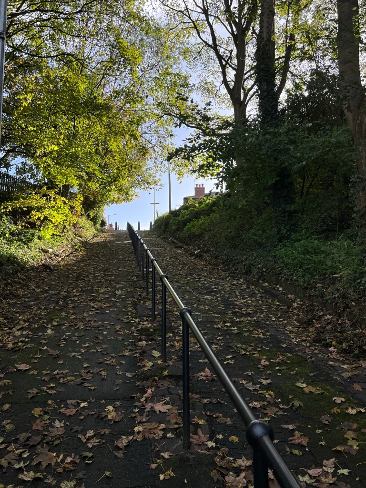

Vernon Park
my dog almost fell in the duck pond
and by fell I mean he fucking tried to jump in
Find out more...Woodbank Park
best park in central stockport imo, this is my picture btw, isn't it nice!
feels like you're out in the woods even though you're actually like 50 feet from a major road at pretty much all times
Find out more...
Brinksway
spooky caves
beware witches and bears
Find out more...Hollywood Park
not that hollywood
very slope
Find out more... Reddish Vale
nice
is good
Find out more...Bramhall Park
havent been
so there
Find out more...